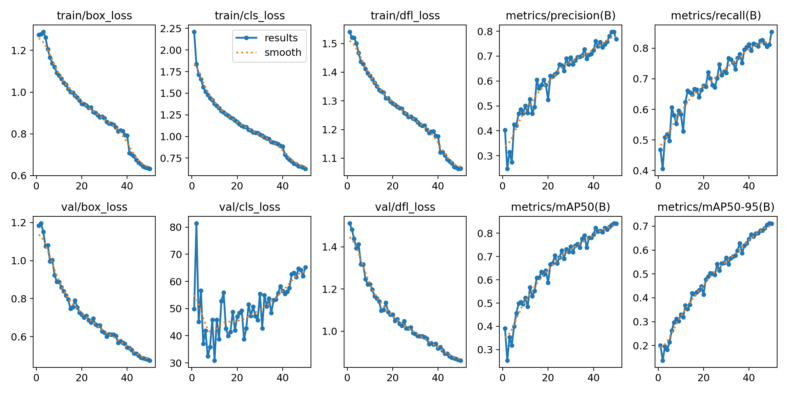
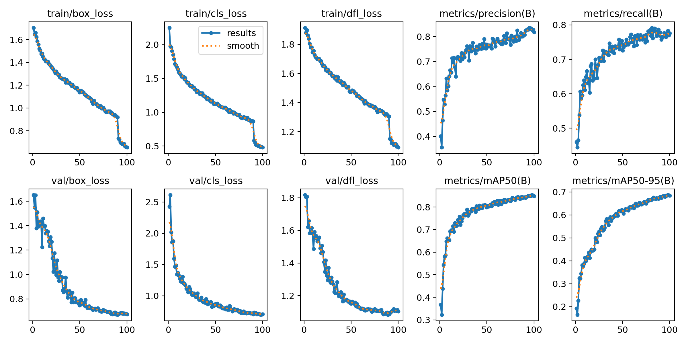

핵심 성능 지표 요약
mAP50
0.795
↓
0.848
+6.7% 향상
mAP50-95
0.646
↓
0.684
+5.9% 향상
Recall
낮음·불안정
↓
0.776
대폭 향상
val/cls_loss 안정성
불안정 (30~80)
↓
안정 (수렴)
정상화
상세 성능 비교
| 항목 | Before (YOLOv8n · 라벨 수정 전) | After (YOLOv8s · 최종) | 변화 |
|---|---|---|---|
| 모델 | YOLOv8n (3M params) | YOLOv8s (11M params) | 파라미터 3.7배 |
| 학습 에포크 | 50 | 100 | — |
| 전체 이미지 수 | 약 2,000장 | 4,144장 | +2배 |
| 클래스 수 | 3 (라벨 오기입 포함) | 2 (damage / normal) | 라벨 정제 완료 |
| Auto-Orient | 미적용 | 적용 | 이미지 방향 정규화 |
| mAP50 (전체) | 0.795 | 0.848 | +6.7% |
| mAP50-95 (전체) | 0.646 | 0.684 | +5.9% |
| Precision | 불안정 (0.3대 급락) | 0.818 (안정) | 정상화 |
| Recall | 낮음 | 0.776 | 대폭 향상 |
| damage Recall | 86.2% (225/261) | 82.6% (955/1156) | 데이터량 4.4배 증가 반영 |
| normal Recall | 97.5% (895/918) | 85.3% (931/1091) | — |
| val/cls_loss 범위 | 30 ~ 80 (불안정) | 안정적 수렴 | 정상화 |
| background FP 총계 | 589건 | 615건 | 데이터량 비례 증가 |
학습 곡선 비교
Before — YOLOv8n (라벨 수정 전, 50 epochs)

After — YOLOv8s (최종, 100 epochs, A100)

Before 주요 문제점
- 심각 val/cls_loss 30~80 폭발적 불안정 → 라벨 오류 직접적 신호
- 문제 Precision 0.3대 급락 반복
- 문제 Recall 낮은 수준 수렴
- mAP50 0.795에 그침 (50 epoch 기준)
After 개선 사항
- 개선 val/cls_loss 안정적 수렴 — 매끄러운 곡선
- 개선 Precision 0.818 안정 유지
- 개선 Recall 0.776 달성 (대폭 향상)
- 개선 mAP50 0.848, mAP50-95 0.684 달성
- 모든 loss 곡선 일관되게 수렴
Confusion Matrix 비교
Before — Confusion Matrix (YOLOv8n)
.png)
After — Confusion Matrix (YOLOv8s 최종)
.png)
Before Confusion Matrix 분석
damage 정탐율 (Recall)86.2% (225/261)
normal 정탐율 (Recall)97.5% (895/918)
background → damage 오탐104건
background → normal 오탐485건
총 오탐 (background FP)589건
After Confusion Matrix 분석
damage 정탐율 (Recall)82.6% (955/1156)
normal 정탐율 (Recall)85.3% (931/1091)
background → damage 오탐290건
background → normal 오탐325건
총 오탐 (background FP)615건
종합 결론
개선 과정 요약
- 라벨 오류(0 클래스) 제거 및 damaged 클래스 기준 통일 → val/cls_loss 정상화
- 데이터 2배 증강 (2,000장 → 4,144장) + Auto-Orient 적용 → 이미지 품질 정규화
- YOLOv8n → YOLOv8s 업그레이드 (파라미터 3M → 11M) → 표현력 대폭 향상
- mAP50: 0.795 → 0.848 (+6.7%), mAP50-95: 0.646 → 0.684 (+5.9%)
- Recall: 낮음 → 0.776, 학습 곡선 전반적으로 안정적 수렴 달성